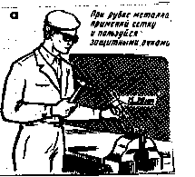
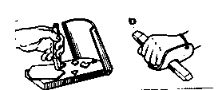
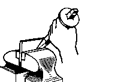
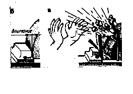
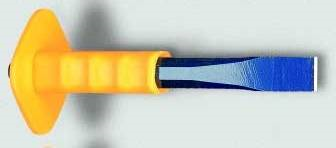

РУБКА МЕТАЛЛА. ТЕХНИКА БЕЗОПАСНОСТИ
1. Можно работать только исправным инструментом;
2. Молоток должен быть хорошо закреплен на рукоятке;
3. При рубке необходимо работать в защитных очках;
4. При рубке твердого и хрупкого металла следует обязательно использовать ограждение: сетку, щиток;
5. Для предохранения рук от повреждений на зубило следует надевать предохранительную резиновую шайбу.




